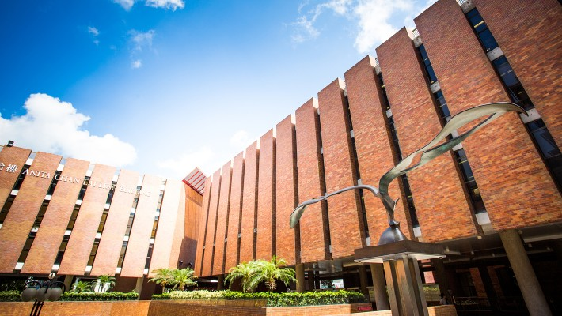

KDD 2025CCF-A
When Graph Meets Multimodal: Benchmarking and Meditating on Multimodal Attributed Graph Learning
构建五个多模态图数据集，在统一协议下比较 GNN 与 VLM 两类预测范式，分析领域差异、模态不平衡及图检索的影响。
目前，我是中南大学计算机科学专业博士生，师从 Senzhang Wang 教授，预计于2027年6月毕业。
2025年9月至2026年8月，我参加了香港理工大学博士生联合培养计划，以全额资助科研助理的身份开展研究，接受 Chengqi Zhang 教授的指导。同时，我也接受 Shirui Pan 教授的研究指导。
我的研究从标签稀疏条件下的图对比学习出发，逐步拓展到文本属性图与多模态属性图。我围绕这些问题设计学习方法与评测基准，并在模型架构层面向 Graph–LLM 拓展。
此前，我曾在微软亚洲研究院和微软 STCA（远程）实习，分别接受 Chaozhuo Li 和 Weihao Han 的指导。我于2021年获得合肥工业大学数学与应用数学专业理学学士学位。 教育与研究经历 ↓
寻找工作机会。我正在寻找大语言模型、智能体与推理方向的研究助理和算法工程师岗位。
5篇第一作者论文 · 共14篇论文
会议与期刊评级依据 CCF 2026 版目录。
KDD 2025CCF-A
构建五个多模态图数据集，在统一协议下比较 GNN 与 VLM 两类预测范式，分析领域差异、模态不平衡及图检索的影响。

NeurIPS 2023CCF-A
提出 CS-TAG 基准，通过标准化评测比较语言模型、图神经网络及其结合方式在文本属性图上的表现。

WSDM 2025 · 口头报告CCF-B
融合通用语言知识与任务专用文本表示，提升文本属性图上的学习效果。

ACM TKDD 2025CCF-B
通过语义子图与跨尺度混合增强，在丰富图增强方式的同时保留语义信息。

ICML 2026 · 已录用CCF-A
ICLR 2026CCF-A
CIKM 2026 · 已录用CCF-B
IJCAI 2026CCF-B
WWW 2025 · 口头报告CCF-A
NeurIPS 2023CCF-A
AAAI 2023CCF-A
ICLR 2023 · 口头报告CCF-A
SDM 2023CCF-B
2021年9月—2027年6月（预计）
计算机科学与技术 · 硕博连读

2025年9月—2026年8月
博士生联合培养 · 获资助科研助理
联合培养导师：Chengqi Zhang 教授；同时接受 Shirui Pan 教授的研究指导。
2017年9月—2021年6月
数学与应用数学 · 理学学士
2024–2026
NeurIPSICLRICMLKDDCIKM
故事、音乐与一点游戏时光
研究之外，我喜欢视频创作与剪辑，也喜欢动漫、剧集和游戏。音乐方面，我喜欢周杰伦与田馥甄的作品。
页首的头像里，还藏着一个小惊喜。